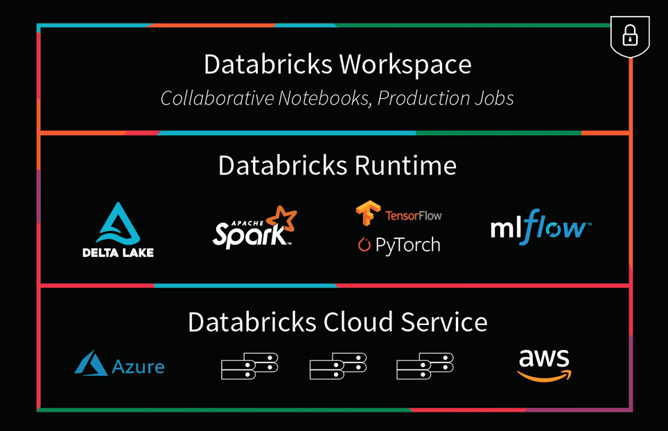

5 What is Databricks?
5.2 The elevator pitches
Check out these branded videos.
Here is a bit more nerdy DS/CS pitch from their website
With origins in academia and the open-source community, Databricks was founded in 2013 by the original creators of Apache Spark™, Delta Lake, and MLflow. As the world’s first and only lakehouse platform in the cloud, Databricks combines the best of data warehouses and data lakes to offer an open and unified platform for data and AI.
Introduction to Databricks Unified Data Platform: 5 min demo

https://www.databricks.com/spark/comparing-databricks-to-apache-spark↩︎